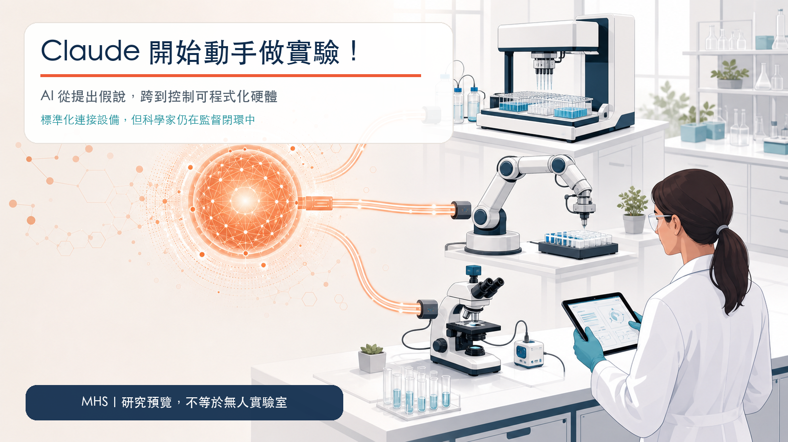

文章歸檔
2026 年 9 月文章
本月共 3 篇 Drugnews 分析，依時間倒序呈現。

Claude 開始動手做實驗！AI 搶進真實實驗室，遊戲規則變了
Anthropic 公開模型硬體標準 MHS 研究預覽，讓 AI 代理透過共通介面讀取與操作顯微鏡、移液工作站、機械手臂與雷射控制系統；這是概念驗證，不是無人實驗室已成熟。
AnthropicClaudeModel Hardware StandardMHSAI for Science

新藥上市才 7 個月，公司就聲請清盤：真正的死亡谷在核准之後
ORLYNVAH 上市第一季只有 40 萬美元淨產品收入，同季銷售、一般與管理費約 650 萬美元；約七個月後，Iterum 聲請清盤。Karyopharm 與 Theravance 的情況不同，卻共同顯示新藥核准後，收入、成本、管線與資本四座時鐘會同時啟動。
Iterum TherapeuticsORLYNVAHKaryopharmXPOVIOTheravance Biopharma

新藥能先在電腦裡試？「虛擬細胞」來了！
GenBio AI 的 AIDO Cell 嘗試用共享狀態串起 DNA、RNA、蛋白質與細胞表型，並連續模擬基因、藥物與抗藥性擾動。公司基準顯示 31 項指標中有 24 項追平或超越專用模型，但目前只有 K-562、Hep-G2 兩種原型細胞，新預測仍待實體實驗、外部重現與盲測。
AIDO CellGenBio AI虛擬細胞AI 製藥單細胞